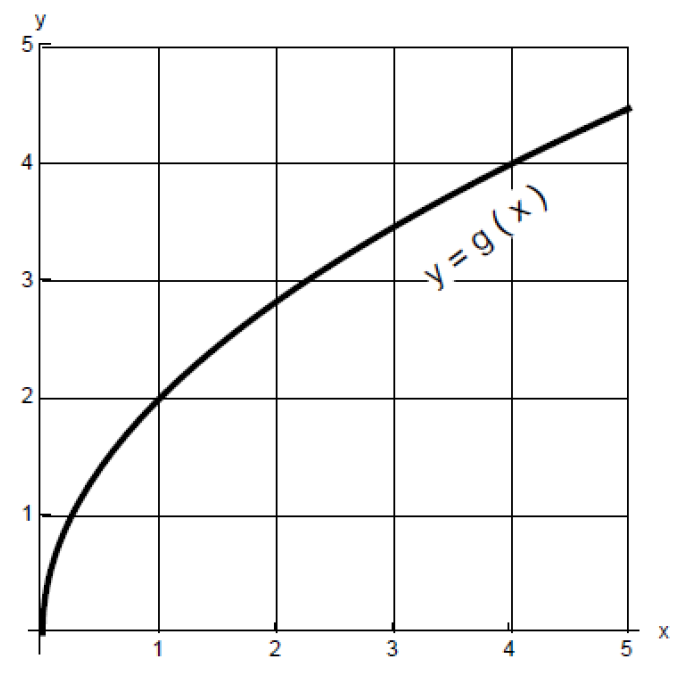
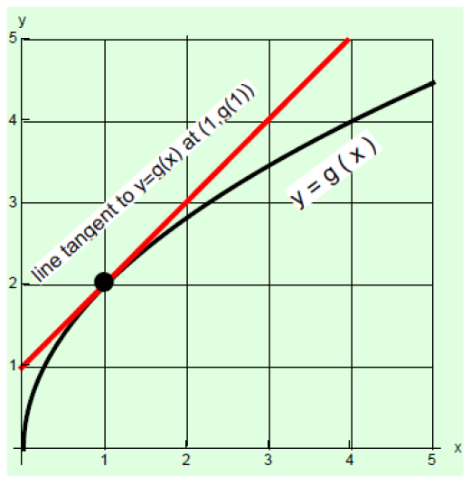

\(\dfrac {d}{dx} \left ({\frac {xg(x)}{x+3}}\right )\ \text {at}\ x=1\)

From the graph it appears that \(g(1)=2\). We can draw the line tangent to the curve \(y=g(x)\) at
the point \((1,g(1))\)

Since \(g'(1)\) is the slope of the line tangent to the curve \(y=g(x)\) at the point \((1,g(1))\), we can estimate it from the figure above. The tangent line seems to pass through the points \((1,2)\) and \((2,3)\), so its slope is \(\frac {3-2}{2-1}=1\).
\begin{align*} \eval { \dfrac {d}{dx} \left ( \frac {xg(x)}{x+3}\right )}_{x=1}&= \eval {\frac {(g(x)+xg'(x))(x+3)-xg(x)}{(x+3)^2}}_{x=1}\\ &=\frac {(g(1)+1g'(1))(1+3)-(1)g(1)}{(1+3)^2} \\ & \approx \frac {(2+1(1))(4)-1(2)}{4^2}\\ &=\frac {(2+1)(4)-2}{16}\\ &= \frac {3(4)-2}{16}\\ &= \frac {12-2}{16}\\ &= \frac {10}{16}\\ &=\frac {5}{8} \end{align*}